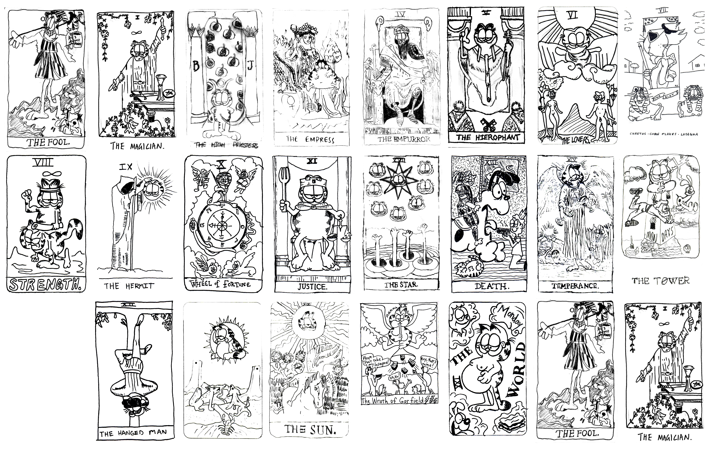

Illustration
Gartarot

In 2018 I hosted an art workshop where we discussed the history of copyright law, fair use, publishing work with creative commons permissions, and when you can sell derivative work for profit.
At the end of the discussion, I asked everyone to randomly select a tarot card and redraw it to feature Garfield or characters from the extended Garfield Universe. We had exactly the right number of people to complete the Major Arcana (Major Gar-cana…?). We decided to publish the artwork under a CC BY-NC 4.0 DEED license which means people are free to share, remix, and use the art we created as long as it was credited to our group and it was used non-commercially.
